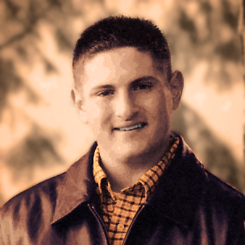

The 2015 KIDSPORTS Invitational will benefit the KIDSPORTS Emerald Scholarship Fund as well as the Stephen Dember Memorial Scholarship Fund.
About the KIDSPORTS Emerald Scholarship Fund:
The KIDSPORTS Emerald Scholarship Fund was founded by KIDSPORTS to provide children of all ages in the Eugene/Springfield community under financial constraints the opportunity to enjoy the healthy, fun benefits of team sports.
KIDSPORTS programs are designed to meet the following objectives:
About the Stephen Dember Memorial Scholarship Fund:
The Stephen Dember Memorial Scholarship Fund was founded in 2005 in memory of Stephen Dember, a member of the Warsaw Sports Business Club who passed away while abroad. The scholarship is given to one outstanding sports business student every year.
About Stephen Dember:
To know Stephen was to know someone who lived his life with great enthusiasm and passion. He had an exuberant, positive and uplifting spirit and was blessed with a high degree of intellect, a great sense of humor, and a big heart. At the young age of 20, Stephen was very accomplished academically, athletically, and socially.
As a student of the Lundquist College of Business Honors College, Stephen was a dual major in Business Administration and Economics with an emphasis in Sports Business and Pre-Law. His career aspiration was to become a sports executive or agent. Stephen consistently was named to the Dean’s List and was a Dean’s Scholarship recipient. In addition, he was named to the National Society of Collegiate Scholars.
Stephen was very involved in “Duck Life” and would have been the ’05 Vice-President of the “Pit Crew.” He was an active member of the Warsaw Sports Business Club, volunteered for the 3-on-3-basketball tournament, and remained a very enthusiastic supporter of Oregon Ducks Basketball and Football. In addition to his life at the University of Oregon, Stephen was very socially aware and volunteered many hours to various causes that were important to him.
Stephen was a very loving son and brother and was a loyal and trusted friend who always had time to encourage and support others. In general, Stephen was an incredibly passionate young man. He had a zest for life and gave 100% to whatever he pursued. Stephen was passionate about many things; his family, his friends, and The Ducks.